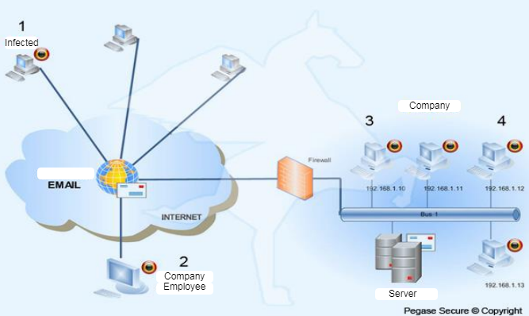

What Is a Computer Worm?
A worm virus is a virus that spreads automatically across a network to infect the devices connected to it. It reproduces itself to exploit vulnerabilities on your device and steal your information. Also, it can create a backdoor on your computer to gain remote access to it.
Computer worms consume a lot of memory and bandwidth. This can lead to network overload. Also, it can slow the performance of your device drastically. Worms can delete and modify files on a device which lets them install malicious software on the workstation.
How Does It Spread?
This malware is transmitted through vulnerabilities in a software and it can also be spread with social engineering. Email spams and text messages are useful tools for the hackers to circulate the worm. When an email attachment is opened or a link is used, the user downloads the virus without necessarily knowing it. Then, it infects the user’s computer and spreads across the network. In fact, this infection can be done by sending automated email and messages to the infected user’s contacts. When one of his contacts clicks on a link sent by him, the cycle continues.

Example
{kind=link}
- A contact of an employee is infected by a worm and an automated spam email is sent to the employee.
- The employee downloads the virus.
- The virus automatically sends mails to the employee’s contacts.
- The worm spreads on the company’s network.
Differences With the Trojan Horse
Worms are different than Trojan horses. A worm spreads across devices on its own, but a Trojan needs an additional program to do so. A Trojan looks like legitimate programs that cause harm to your computer when you execute it, but the same cannot be said about worms. When a worm is downloaded, it automatically starts the infection of the network. Because of this, the worm is exponentially more contagious than the Trojan. Furthermore, the computer worm doesn’t always require some action on the part of the user.
How to Tell if Your Device Is Infected?
Your machine might be infected if:
- Your computer isn’t as fast as before.
- A program is crashing unexpectedly or not running like expected.
- Unknown new files are on your device.
- A file got deleted without your knowing.
- Your hard drive is almost full.
How to Protect Yourself
- Use an antivirus software. A strong antivirus can fight worms and prevent them form infecting your device.
- Be suspicious of emails and text messages. You shouldn’t open an email attachment or click on a link from a source you don’t trust.
- Keep your operating system up to date. This makes you less likely to have vulnerabilities on your device since manufacturers often release patches to fix them.
 Caplinked, March 15, 2021, https://www.caplinked.com/blog/importance-of-cybersecurity/#:~:text=To%20stem%20the%20tide%20of,essential%20to%20any%20cybersecurity%20program
Caplinked, March 15, 2021, https://www.caplinked.com/blog/importance-of-cybersecurity/#:~:text=To%20stem%20the%20tide%20of,essential%20to%20any%20cybersecurity%20program
Sources:
9. TechTarget
10. Fortinet
11. Malwareytes
6. Etienne Forest and Rachid Kadouche, Lionel-Groulx College